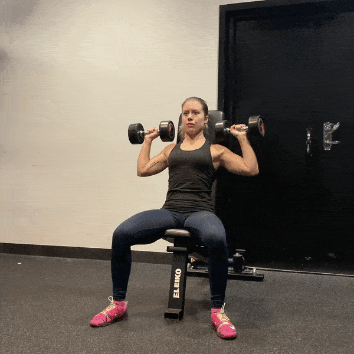
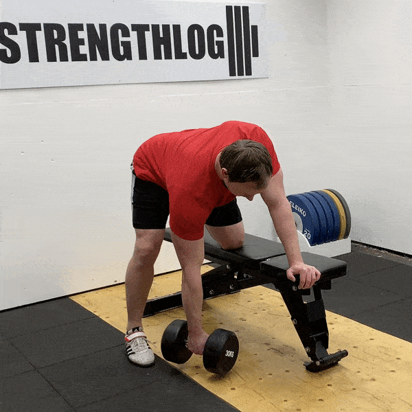
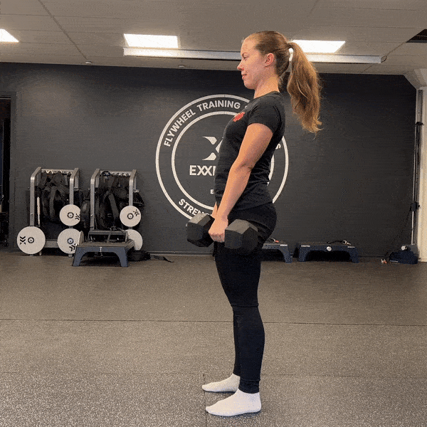
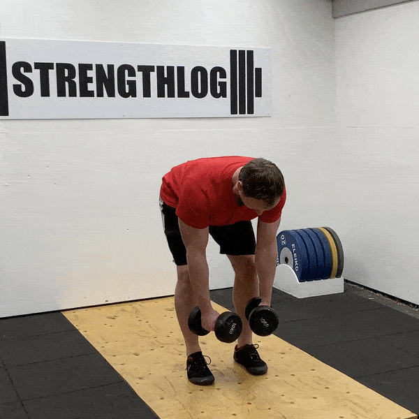
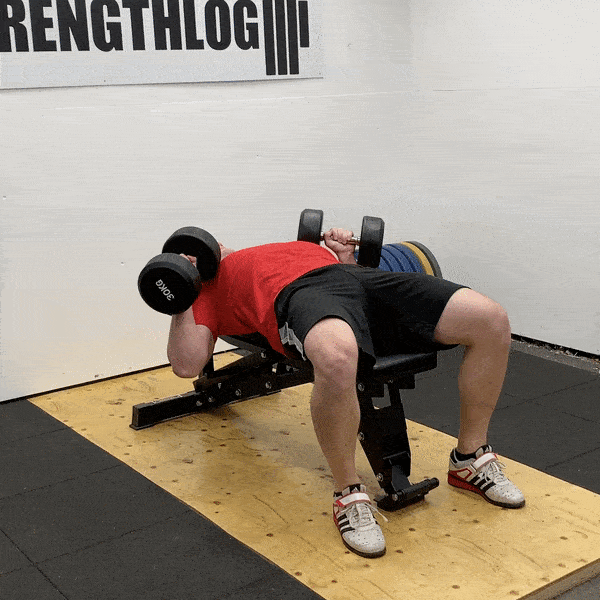

Cycle through the following exercises with minimal rest, aiming for 2–3 rounds. Perform the prescribed reps and control the movement.
Lie on your back with knees bent and press two dumbbells up from the floor. This limited range of motion emphasizes the triceps and chest while keeping your shoulders safe.

Sit on a chair and press two dumbbells overhead without leaning back. Keep your ribs down and neck long to protect your spine.

Stand tall and lift your dumbbells out to the sides with a slight bend in the elbows until your arms are parallel to the floor. Avoid swinging; pause briefly at the top and control the descent to work your side deltoids.

Stand with palms facing each other and curl the dumbbells up, keeping your elbows close to your sides. A neutral grip emphasizes the brachialis and forearms while reducing wrist strain.

Perform two rounds of the following exercises with minimal rest. Focus on control and form.
Place one hand on a chair for support. Hinge at the hips and pull a dumbbell toward your hip, keeping your back flat. This works your upper back and lats.

Hold a dumbbell in each hand. Push your hips back and lower the weights to mid-shin while keeping a slight knee bend and a neutral spine, then stand tall. This hip‑hinge movement targets the glutes and hamstrings.

Hinge forward slightly and raise your arms out to the sides with dumbbells. Lead with the elbows and squeeze your shoulder blades at the top to target the rear deltoids.

Lie on the floor and press two dumbbells together above your chest. Keep them squeezed as you press up and down to emphasize your chest and triceps.

Lie on a bench or the floor with a single dumbbell held with both hands. Keeping your elbows fixed, lower the weight behind your head and then extend your arms to work the triceps.